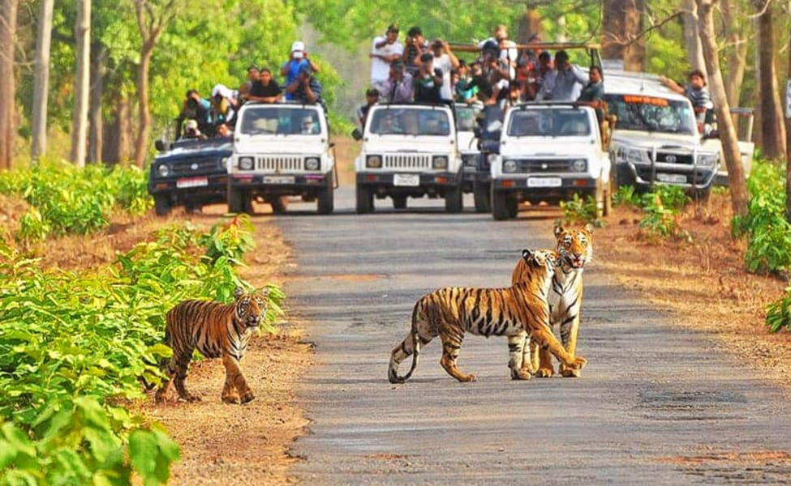

The wildlife of India is diverse and its national parks and biosphere reserves are home to many endangered wildlife species like Royal Bengal Tigers and Red Panda, the vulnerable one-horned Rhinoceros and Snow Leopards, and critically endangered Great Indian Bustard, among many other species of flora and fauna.
India boasts 104 national parks, 551 Wildlife Sanctuaries, 131 Marine Protected Areas, 18 Biosphere Reserves, 88 Conservation Reserves and 127 Community Reserves, covering a total of 1,65,088.57 sq km. In total, there are 870 Protected Areas which make 5.06% of the geographical area of the country.
Corbett National Park
Estimated-price:
Rs:2000-3000/-
Established in 1936, Corbett Wildlife Preserve is one of the India's oldest national park. This park was originally known as Hailey National Park to protect the endangered Bengal tiger. Over the years, the park has gone through several name changes like in 1954-54 it was renamed as Ramganga National Park. and then again renamed as Corbett National Park in 1955-56. The park also takes pride in being one of the thirteen protected areas covered by the World Wide Fund For Nature.
Ranthambhore National Park
 Estimated-price:
Rs:4000-8000/-
Estimated-price:
Rs:4000-8000/-
Ranthambore National Park, one of the largest and the most popular national parks in North India, is one of the star attractions of wildlife tourism in Rajasthan. Located in the Sawai Madhopur district of Rajasthan, Ranthambore is located just 180 km away from Jaipur (with Jaipur International Airport being the nearest airport to it) and 110 km from Kota. The nearest railway station from Ranthambore is Sawai Madhopur. Ranthambore National Park is divided into 10 zones, out of which, zones 1-5 are best for tiger sightings.
The park counted among the perfect wildlife reserves in India, and is best described as a tiger friendly land that proudly preserves the most famous tigers in India, which are identified by the distinguished marks on their body and ruling territory.
Kanha National Park

Estimated-price:
Rs:15000-25000/-
Kanha National Park is one of the most striking national parks in the Maikal range that proves to be the most inspiring place for the creative creatures. Creatures that don't live in the jungles but have great fascinations for the jungles, the intelligent creatures, the human being, who have great alluring for the wildlife and natural bewilderment. Among those intelligent creatures, the most notable writer and novelist of 18th century Rudyard Kipling once visited this place, the place which is the perfect home to magnanimous counts of Barasingha, the Swamp Deer. And to the curiosity of many, the invention of "The Jungle Book" by Rudyard Kipling was the result of the perfect inspiration of Kanha and the nearby areas.
Bandhavgarh National Park
Estimated-price:
Rs:10000-15000/-
Bandhavgarh National Park is the most visited and tremendously famed tiger palace in Madhya Pradesh located in the Vindhya Hills of Umaria district. The park is recognized as one of the major destination opted for the tiger project on the wage of continuing the essential tiger project in India. by spreading across an area of 105 sq km the name Bandhavgarh has been acquired from the most prominent hillock of the area, flourished with high biodiversity and since the area is filled with large density of tiger population, Bandhavgarh stands among the most regarded national park preferably for tiger tours which is being visited at the best season of 15th of October to till 30th of June.
Pench National Park
Estimated-price:
Rs:25000-30000/-
Pench National Park is placed in Chhindwara and Seoni districts of Madhya Pradesh (India). The name is derived from the Pench River, flows through the National Park. The river flows from north to south that divides the park into equal eastern and western halves-the well woody areas of both districts. The park has several species of animals among which wild guars, tigers, leopard, monkeys and deer, etc., are easily observed. The park is nearby from Pauni on National Highway 7 and very close to Maharashtra & Nagpur. There are two famous gates for tourist entry, which is named as Turiya and Karmajhiri.
Sunderban National Park
 Estimated-price:
Rs:10000-15000/-
Estimated-price:
Rs:10000-15000/-
A national park, a tiger reserve and a biosphere reserve in India the Sundarbans National Park is the choice of every tiger lover coming to India for catching the mightiest glimpses of this majestic creature along the Ganges delta of India and Bangladesh. The delta is closely being crusted with Mangrove forests to refurbish withthe most ardent Sunderban area along the Gangetic plains that justifies the name; to mean it as "the beautiful forest"and is being recognized as one of the largest reserves for the Bengal Tigers with the presence of the Sunderi tree species. A UNESCO World Heritage site, the Sundarbans area covers 4624 sq km in India alone to incorporate a variety of bird, reptile and invertebrate species, including the salt-water crocodile.
Nehru Zoological park
 Estimated-price:
Rs:1500-2000/-
Estimated-price:
Rs:1500-2000/-
Spread over an area of approximately 380 acres, the Nehru Zoo Park boasts of almost 1,500 species of birds, mammals and reptiles. Adding to the extensive varieties of wildlife, this zoo park is considered to be the first one where animals have been kept in zoological order.
What makes Hyderabad zoo an amiable place for both visitors and inhabitants are the open enclosures in which animals are kept. These open enclosures have been created to resemble the natural habitats. A wide variety of exotic animals have been successfully bred in this zoo park as well.
Tadoba National Park
 Estimated-price:
Rs:1000-2000/-
Estimated-price:
Rs:1000-2000/-
Tadoba National Park
The oldest and largest national park in Maharashtra, Tadoba National Park sprawls in an area of 625.4 sq km. This top wildlife destination in Maharashtra includes Tadoba National Park (116.55 sq km) and Andhari Wildlife Sanctuary (508.85 sq km), which together form Tadoba Andhari Tiger Reserve covering Chimur Hills, Moharli and Kolsa Ranges. The park is adorned with thickets of teak & bamboo; a magical landscape of rugged cliffs; marshlands; and lakes which make a happy home for a wide range of animals like tigers, panthers, hyenas, sloth bears, wild dogs, jackals, barking deer, bison, sambar etc. Tadoba is one of the best wildlife destinations in India for an enthralling tiger sighting experience.
Bharatpur Bird Sanctuary
 Estimated-price:
Rs:25000-30000/-
Estimated-price:
Rs:25000-30000/-
Some address it Keoladeo National Park and some define as Ghana National Park; the Bharatpur Bird Sanctuary, a World Heritage Site, is the perfect home to almost thousands of birds all across the world. Located in Bharatpur, Rajasthan, it's a famous Avifauna Sanctuary that hosts almost thousands of birds especially in winter season to find the migratory species. Amazingly, at least 230 species of birds have made this sanctuary their favorite home and is the most favorable and protected zone for them. Nesting indigenous water birds and migratory water birds specifically the Siberian Crane, the Bharatpur Sanctuary also boasts with many species of Sambar, Chital, Nilgai and Boar. It is the major tourist spot for most of the ornithologists today during hibernal season.
Sultanpur Bird Sanctuary
 Estimated-price:
Rs:100-200/-
Estimated-price:
Rs:100-200/-
Sultanpur National Park, formerly known as Sultanpur Bird Sanctuary, is located in Gurgaon district in Haryana in Sultanpur area to derive the name of the park where tremendous varieties of avi-faunas can be illustrated. Located 40 kms from Dhaula Kuan and just 15 kms away from Gurgaon, the industrial hub of the capital city, on the way to Gurgaon - Farukh Nagar Road, this place is the most preferred place for the bird lovers and the ornithologists.
With tropical climate in the region, winters are found very chilly here with scorching summers when the bird counts are found low. Monsoons are very pleasant here that starts in the month of July to continue till September.
Salim Ali Bird Sanctuary
 Estimated-price:
Rs:500-1500/-
Estimated-price:
Rs:500-1500/-
Salim Ali Bird Sanctuary is an estuarine mangrove habitat, which is declared as the bird sanctuary, and located on western tip of the Island of Chorão along the Mandovi River, Goa, in India. The sanctuary is named after Salim Ali, the eminent Indian ornithologist
The sanctuary and island are accessed by a ferry service running between Ribander and Chorão.Several species of birds have been recorded and the common species include the striated heron and western reef heron. Other species that have been recorded include the little bittern, black bittern, red knot, jack snipe and pied avocet (on transient sandbanks).
Manas National Park
 Estimated-price:
Rs:3000-7000/-
Estimated-price:
Rs:3000-7000/-
Deemed as a safe shelter for several rare and endangered species, Manas National Park in Assam is a UNESCO Natural World Heritage Site, a tiger and elephant reserve, and a biosphere reserve. Manas National Park gets its name from the River Manas, which flows through the reserve and is also the major tributary of Brahmaputra River. Sprawling in a large area of 950 sq km, the national park shares border with Bhutan's Royal Manas National Park and is also home to species like Assam roofed turtle, hispid hare, golden langur and pygmy hog. The wildlife reserve covers Chirang, Darrang, Kokrajhar, Udalguri and Baska districts of Assam and has three ranges, namely Bansbari (Central), Panbari (Western), and Bhuiapara (Eastern) in it. Manas National Park is also applauded for its conservation park and is indeed a must-visit wildlife destination in India.
Panna National Park
 Estimated-price:
Rs:6000-13000/-
Estimated-price:
Rs:6000-13000/-
Panna National Park located in Panna and Chattarpur district of Madhya Pradesh is formally being renowned as the 22nd tiger reserve of India and fifth in Madhya Pradesh. By covering an area of 542.67 sq km, Panna Reserve lies besides the areas of the Ken River at the central state of India, Madhya Pradesh at a distance of 57 km from Khajuraho, a world heritage center. Panna Tiger Reserve was being found as the best managed and maintained national parks of India by the Ministry of Tourism of India and this reputation brought the park the Award of Excellence in the year 2007. Thanks to all the efforts of Mr. R. Shreenivasa Murthy, a forest officer of the area who brought his best efforts to bring the Panna Park as the best managed and developed park in the area, in collaboration with his team.
Kaziranga National Park
 Estimated-price:
Rs:20000-24000/-
Estimated-price:
Rs:20000-24000/-
Applauded for its greater one-horned rhinoceros conservation efforts, Kaziranga National Park is located in the Golaghat and Nagaon district of Assam. The popular national park is also a UNESCO World Heritage Site and houses two-third of the total world population of greater one-horned rhinoceros. Apart from the one-horned rhinos, the national park that sprawls in an area of 430 sq km also boasts high density of tigers, and a large breeding ground for elephants, swamp deer, and wild water buffaloes. The national park is also recognized an Important Bird Area (IBA) making it not only an ideal wildlife sighting destination in India but a birdwatcher’s paradise as well.